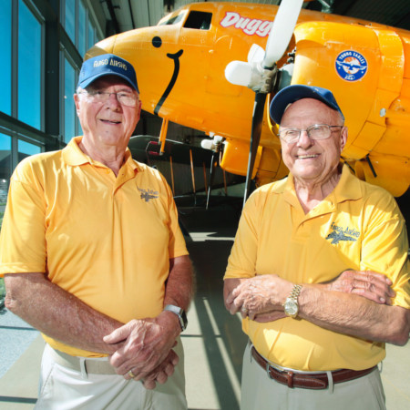
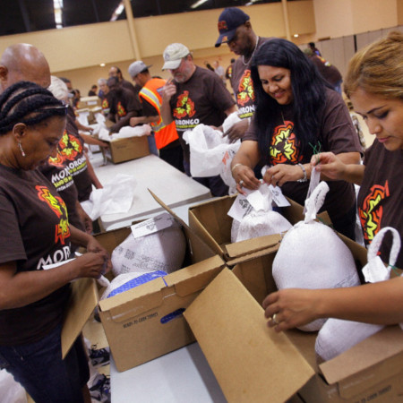

Retiring after two decades at AirSho helm
30 years of free turkeys
Previously senior reporter, staff reporter, intern
Datawrapper | Tableau | Fusion Tables | QGIS | Microsoft Access | Open Refine | Carto | Basic SQL | Beginner in R | Beginner with JSON
Twitter | Tumblr | Snapchat | Facebook | LinkedIn | Pinterest | Instagram | Google+
FOIA | AP Style | Basic HTML | Basic CSS | Basic JavaScript | Basic InDesign | Conversational in Spanish | Google Analytics | Parse.ly | Chartbeat